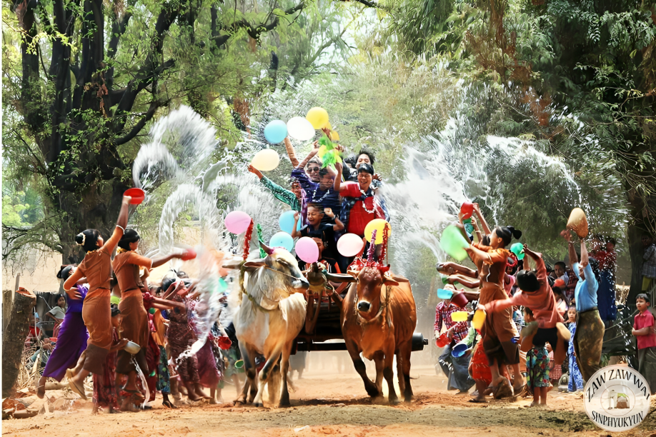
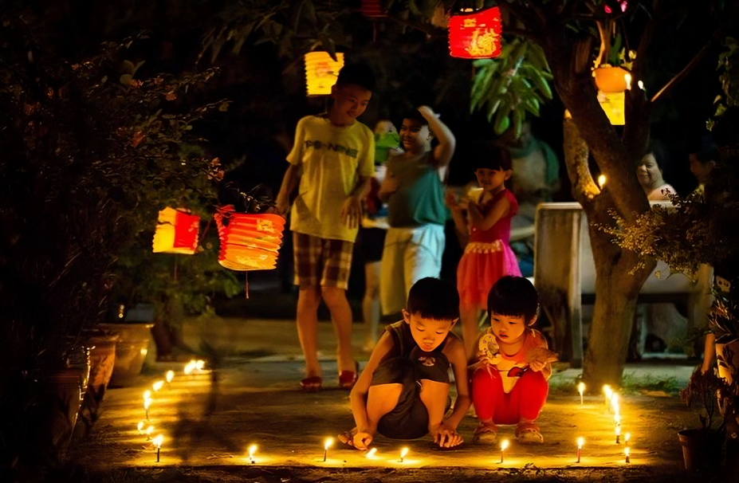
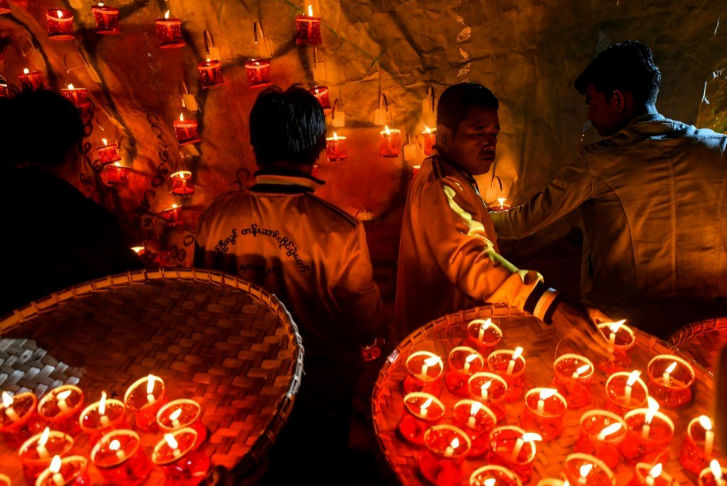
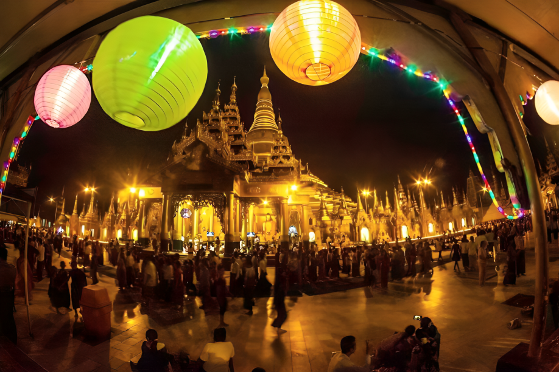

Myanmar Traditional Festivals
Myanmar traditional festivals reflect rich culture and spirituality, celebrated monthly with community joy.
Thingyan (သင်္ကြန်)
- Time: Myanmar New Year(April 13th-16th)
- Myanmar Month: Tagu (တန်ခူး)
Thingyan is the Myanmar New Year Water Festival symbolizing spiritual cleansing.
Traditions
- People splash water to cleanse sins
- Eat Mont Lone Yay Paw (sweet rice balls)
- Street music and flower wearing
- Community stage performances

Thadingyut (သီတင်းကျွတ်)
- Time: October
- Myanmar Month: Thadingyut (သီတင်းကျွတ်)
Thadingyut marks the end of Buddhist Lent with colorful lights and gratitude to elders.
Traditions
- People light up streets and homes
- Visit and pay respect to elders
- Charity and offerings to monks
- Fireworks and night bazaars

Tazaungdaing (တန်ဆောင်တိုင်)
- Time: November
- Myanmar Month: Tazaungmon (တန်ဆောင်မုန်း)
Tazaungdaing is a light and robe offering festival, especially famous for hot air balloon competitions.
Traditions
- Offering robes to monks (Kathein)
- Releasing hot air balloons at night
- Parades and lantern lighting
- Charity competitions
Tazaungdaing Images



Waso (ဝါဆို)
- Time: July
- Myanmar Month: Waso (ဝါဆို)
Waso commemorates Buddha’s First Sermon and marks the start of Buddhist Lent.
Traditions
- Donating Waso robes to monks
- Monks begin 3-month Lent retreat
- People avoid weddings or celebrations
- Religious processions